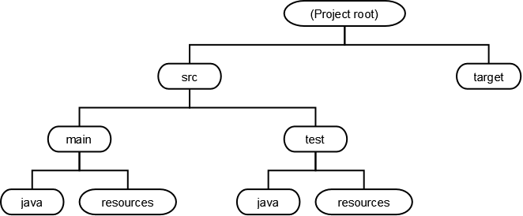
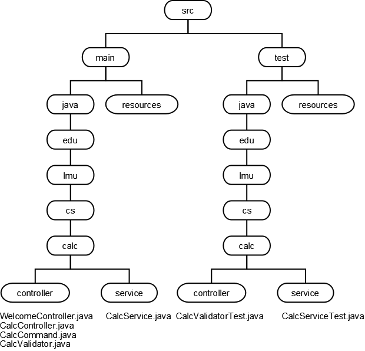
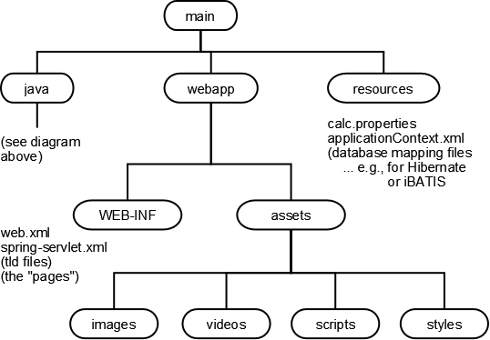

Building Large Java Applications
Contents
Building Large Java Applications¶
Author: Ray Toal
Real Java applications are made up of hundreds, or thousands, of classes. Designing and building an application of this size isn’t at all like building something tiny.
CONTENTS
Java Applications • Organizing Your Development Environment • Basics of Class Loading • Building Your Application
Java Applications¶
A Java application is made up of classes and resources. Resources can be videos, songs, images, text files, data files, etc. There can be thousands of classes and thousands of resource files in one application. Often you will write only some of the classes yourself, and simply use many classes written by others.
There are three main types of Java applications:
Native applications, which are stored on, and run directly on, the user’s desktop, laptop, or mobile device.
Web applications, served by, and run mostly on, a web server.
WebStart applications, which are stored on a server, but downloaded and run on demand.
Generally, all of the classes and resources are zipped up into a single file. For client apps and webstart apps, this is a JAR file; for webapps this is a WAR file. Both jars and wars use the popular zip format (nice and portable). Note: with webstart apps, you actually need two files, since the JNLP file has to live outside the war.
Organizing Your Development Environment¶
When dealing with large programs it is important that you keep your workspace organized. The following directory layout has become standard; you should follow it:

Why is this so great?
Everything under target is “derived” and therefore does not go into revision control. For example you put your Java source code files under src/main/java. When these are compiled, the Java compiler places the resulting class files under target.
Everything under src/main goes in your distributed application (you don’t bundle your tests in your app).
Since you may have hundreds of Java source files, you need to group them into packages. Make sure the initial part of the package name follows the convention of using your “reversed” Internet domain (such as edu.lmu.cs. The folder structure of your application must mirror the package names! Here is an example to explain:
Suppose we are writing a calculator web application. We would need Java classes for controllers, validators, and services, and perhaps some tests. Our project structure should be:

Of course a larger application might have many subpackages within an application, perhaps one per each functional subsystem of the project. And within each subsystem, we may need more than just controller and service; we might want separate packages for validators, domain classes, types, utility classes, factories, daos, property editors, etc.
Now if we were building a client application, we would probably place imeages, scripts, movies and so on into the resources folder, but the convention is to structure these things under src/main/webapp as shown below. The resources folder does keep properties files and other run-time configuration files (e.g., Hibernate mapping files). To make the example interesting, we’ll assume that we are building our application using the Spring Framework.

Now let’s see how Java applications are built and run. (In doing so, we’ll see why the folder structure needs to match the package name structure.
Basics of Class Loading¶
So all Java applications are made up of a bunch of classes, grouped into packages. But when an application is being compiled and run, how does the system find all the classes? It uses classloaders to find and load the classes (and other resources like images, movies, and properties files) that the program requires.
The Java runtime starts with one classloader (the bootstrap classloader) that finds classes on the local filesystem. You can create your own classloaders to find classes from other places (such as over a network connection), to compose binary classfiles on the fly, or do things while loading classes (like decrypting them, verifying digital signatures, etc.). Classloaders are chained together so that each classloader except the bootstrap loader has a parent; if a classloader can’t find a class it asks its parent to find it.
Every Class object contains a reference to the ClassLoader that defined it; you’ll sometimes see code that says
x.getClass().getClassLoader()
The Bootstrap Classloader¶
Unless you are doing fairly fancy stuff, you never have to tell a classloader to load a class; just mentioning a class is good enough. For example, the class A below refers to:
other classes in the same package
classes from other packages
classes from a library written by someone else
classes from the Java Core API
src/main/java/edu/lmu/cs/scratch/A.java
package edu.lmu.cs.scratch;
public class A {
org.bouncycastle.crypto.BlockCipher cipher =
new com.citysearch.util.crypto.HagenRedmannTwofishEngine();
void m(int x) {
java.util.List y = new java.util.ArrayList();
cipher.reset();
B b = new B();
edu.lmu.cs.math.Complex c;
java.lang.System.out.println("okay");
}
}
src/main/java/edu/lmu/cs/scratch/B.java
package edu.lmu.cs.scratch;
public class B {}
src/main/java/edu/lmu/cs/math/Complex.java
package edu.lmu.cs.math;
public class Complex {
// Class body goes here...
}
So I’ve written classes A, B, and Complex myself, but these other classes (BlockCipher, HagenRedmannTwofishEngine, List, ArrayList, and System) already exist. But it doesn’t really matter who wrote them; what matters is the full class names. A classloader needs to find:
edu.lmu.cs.scratch.A
edu.lmu.cs.scratch.B
edu.lmu.cs.math.Complex
org.bouncycastle.crypto.BlockCipher
com.citysearch.util.crypto.HagenRedmannTwofishEngine
java.util.List
java.util.ArrayList
java.lang.System
But how does the bootstrap class loader find all the classes? First, it turns the full class name into a filename — so the first class in the list above would correspond, on a Windows system, to
edu\lmu\cs\scratch\A.class
(If you’re compiling, and the compiler can’t find that class, it will look for
edu\lmu\cs\scratch\A.java
and compile that for you!!! How sweet.)
On almost every other system, the file names would be:
edu/lmu/cs/scratch/A.class
(or edu/lmu/cs/scratch/A.java)
Note: that filename is a relative path name! Relative to what? The bootstrap loader looks for it in this order:
The jar files in your JRE’s lib directory (rt.jar, jsse.jar, jce.jar, charsets.jar)
The jar files in your extensions directory — by default this is the JRE’s lib/ext directory. You can dump your own jars in this directory, or tell your tool to use a different directory.
Each entry in the current classpath, in order.
Classpath? What’s that?
Classpaths¶
A classpath is simply a list of directories and jar files. The bootstrap class loader searches a classpath when it looks for the classes (or source files) it needs, after searching the platform and extension locations.
On Windows the classpath entries are separated with semicolons; on every other platform (I think) colons are used.
Example
c:\homework\stuff.jar;c:\other\crap;c:\mylibs\junit.jar
If you requested the class a.b.C from the bootstrap classloader, and that class was not found in rt.jar or in the extensions, it would look for, in this order:
a\b\C.class in c:\homework\stuff.jar
c:\other\crap\a\b\C.class
a\b\C.class in c:\mylibs\junit.jar
Specify the classpath when invoking a tool, for example
javac -cp c:\homework\stuff.jar;c:\other\crap;c:\mylibs\junit.jar *.java
or, less flexibly, set the CLASSPATH environment variable (which may seem like a timesaver but can cause headaches). It’s suggested you leave this environment variable unset and use a specific classpath when you invoke a tool. If you really must know about this variable, consult Sun’s online docs.
Building Your Application¶
Developers should be familiar with all three main approaches to building applications
Using Commandline Tools
Everything you need to know is in Sun’s tool documentation.
Using Build Files
The defacto standard application for building Java applications is Maven. (You can also use Ant, which is older.)
Using IDEs
Once you understand how to build applications the hard way, you’re ready to fire up an IDE and use a nice tool to construct classpaths for your projects. Some IDEs just let you drag and drop jar files and directories into a window. However you do it, you need to understand what a classpath is. Note that you can use maven and ant plugins for modern IDEs, too!
Experienced programmers will get the most benefit out of an IDE and a Maven plugin. Beginners should probably pay their dues by using the command line first. This gives you the best “sense” of how things fit together and are supposed to work, enabling you to work much more efficiently with IDEs and plugins when you finally start using them.
End Of Topic